← 小R頻道
3D 列印模型總整理：實用・玩具・機械・關節動物
剛買 Bambu Lab A1，第一件事不是找最酷的模型，而是找「印壞了也不心痛、印好了天天用」的那幾件。這篇把五大類共 80 件整理在一起，每一件都附 MakerWorld 的實際下載次數、原始連結，以及在 A1 上印它要注意什麼、參數怎麼微調。
整理日期 2026-11-08｜下載數為 MakerWorld API 當日實測值
一、先講怎麼挑，不要一開始就挑最難的
新手最常犯的錯，是拿一個 12 小時、需要支撐、還要組裝的模型當第一件。失敗一次就會覺得「這台機器不好用」。
| 階段 | 挑什麼 | 原因 |
|---|
| 第 1–3 件 | 30 分鐘內、免支撐、平底 | 先確認機器沒問題，建立信心 |
| 第 4–10 件 | 實用件（收納、掛勾、夾具） | 失敗成本低，家裡真的用得到 |
| 之後 | 一體成形關節、機構件 | 需要尺寸準度與冷卻都穩定 |
一律先印機器內建的預切片模型。那是原廠參數的基準線，跑得漂亮才代表機器正常；跑不好先查環境（風、地板水平、線材受潮），不要急著改參數。
二、實用：解決生活麻煩的九件
這一批的共同點是「買不到剛好合的尺寸」，所以只能印。
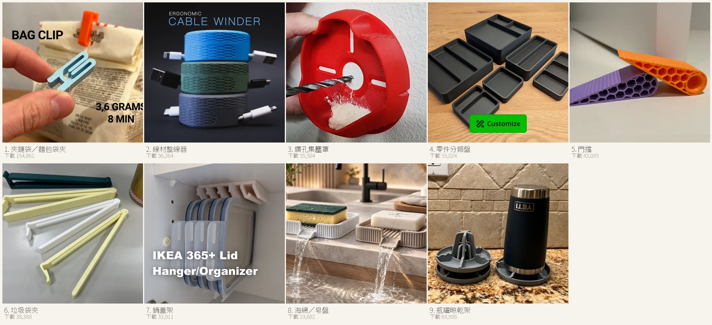
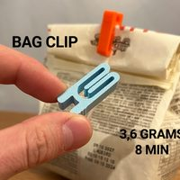
夾鏈袋／麵包袋夾154,861 次下載Mini Bag Clip注意卡扣薄、拆裝次數多會斷
微調0.16mm 層高、填充 30%；常開關就改用 PETG 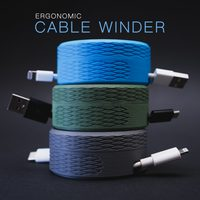
線材整線器56,264 次下載Ergonomic Cable Winder注意夾口尺寸固定，線徑差太多會夾不住
微調依實際線徑縮放 95–105%，填充 25% 
鑽孔集塵罩55,504 次下載Drill Dust Collector注意貼牆面不平會漏粉塵
微調免支撐、外壁 3 圈，背面貼 1mm 海綿膠條 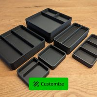
零件分類盤55,024 次下載Parametric Sorting Tray注意多個疊放時公差累積
微調XY 補償 −0.05mm、0.2mm 層高 
門擋43,035 次下載Door Stopper注意磁磚或木地板止滑差
微調底面貼 TPU 墊、填充 40% 
垃圾袋夾38,388 次下載Bag Closure Clips注意長時間夾緊會彈性疲乏
微調PETG 印、填充 20%；要更耐用可 70°C 退火 30 分鐘 
鍋蓋架33,911 次下載Ikea 365+ Plastic Lid Hanger / Organizer注意櫃門厚度不一，掛不上
微調先量門板厚度，掛勾孔位放大 0.3mm 
海綿／皂盤23,682 次下載Japandi Drain Tray – Sponge & Soap Holder注意平底積水、容易發霉
微調PETG 印、3 層外壁，底部自行加 2mm 排水孔 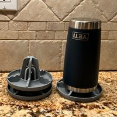
瓶罐晾乾架63,936 次下載Stackable Bottle Drying Rack注意高瓶重心不穩
微調填充 25%、底面貼矽膠墊
三、再補四件日常小麻煩
下載數都在一萬五以上，代表不是小眾需求。
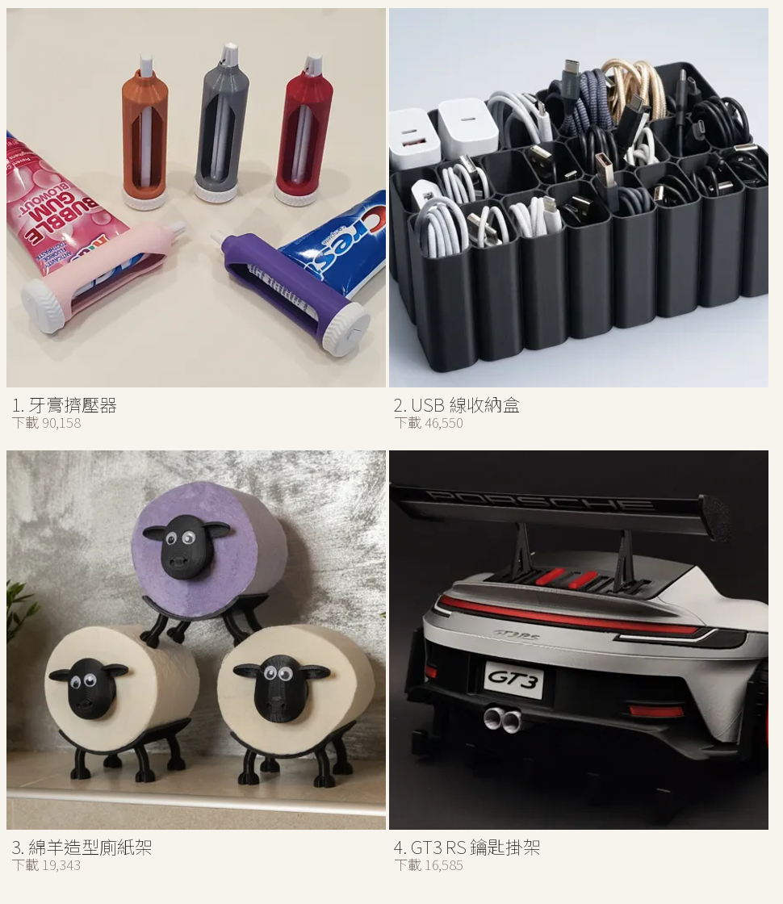
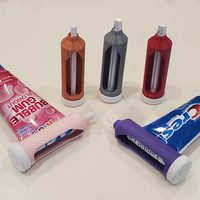
牙膏擠壓器90,158 次下載Ratcheted Toothpaste Tube Squeezer注意齒輪卡死就轉不動
微調0.16mm 層高、XY −0.05mm，PLA 即可 
USB 線收納盒46,550 次下載USB cable organizer Box tray IPhone Samsung注意手機含殼放不進去
微調先量機身尺寸再縮放，內壁 1.6mm 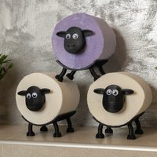
綿羊造型廁紙架19,343 次下載Sheeptastic! Toilet Paper Sheep Holder - FITS ALL!注意捲筒軸太緊、換紙卡卡
微調軸徑 +0.2mm、免支撐 GT3 RS 鑰匙掛架16,585 次下載GT3 rs key hanger注意掛勾處受力集中會斷
微調填充 40%、外壁 4 圈，PETG 更保險
四、生活小物十件：擠、拔、扣、夾、分藥、呼吸、床單、瓶掛、吹風機
這十件都是「每天會用到、壞了再印一個」的東西；前兩件解決牙膏與穿鞋，後三件解決鞋帶與吊掛。共同點是受力件一律用 PETG，PLA 只適合純裝飾。
牙膏擠壓器（螺旋款）17,594 次下載Toothpaste Squeezer注意螺旋桿與齒條公差偏緊
微調0.16mm 層高、外壁 3 圈；組裝卡卡用砂紙修 0.1mm，PETG 比 PLA 耐擠 
兒童鞋拔2,872 次下載Shoe horn for children's shoes注意薄片彎角是斷裂點
微調PETG 或 PLA+ 印，0.16mm；順著彎曲方向平躺，別立著印 
迷你鞋拔（鑰匙圈款）13,068 次下載Shoe Horn注意尺寸小、受力集中
微調填充 100%、外壁 4 圈，0.12mm；掛孔改用 4mm 金屬環較耐用 
鞋帶快扣（旋鈕式）1,583 次下載Schnellverschluss Kordelband Schuhriemen注意螺紋件，層高太大會卡死
微調0.12mm、螺紋處降到 30mm/s，別開 ironing；PETG 耐磨 
萬用夾（ClipBait）7,757 次下載ClipBait V_1注意彈性夾臂，PLA 會脆斷
微調PETG 或 PA、外壁 4 圈、0% 填充；夾口可縮 98% 增加夾力 迷你分藥器4,707 次下載Mini Pill Splitter注意薄刃夾具，PLA 用力會裂
微調PETG 印、0.12mm、外壁 4 圈；藥錠直徑小於 6mm 容易滑，夾口貼一層砂紙增加摩擦 
鼻擴張器 v4486 次下載Nasal Dilator v4注意尺寸不合會壓痛鼻翼
微調先印 95% 試合，PETG 或 TPU 95A、0.12mm、100% 填充；每次使用後清洗 床單固定夾4,772 次下載Pince Anti Drap注意夾力靠彈性臂，PLA 會鬆
微調PETG 印、0.16mm、外壁 4 圈；原作者建議一次印 4 個，床的四角各一個 瓶掛夾（可掛包包／腰帶）3,071 次下載Clips Porte Bouteille注意一體成形活動件，間隙太小會黏死
微調0.16mm、XY −0.05mm；印完先輕輕來回扳動再上瓶，PETG 較耐重複拆裝 
吹風機掛架（不限品牌）392 次下載Hairdryer stand注意夾口依吹風機管徑，太粗會夾不住
微調先量握把直徑、夾口放大 2%；PETG 印、0.16mm、外壁 4 圈、填充 25%
五、玩的：印完就能玩的四件
關節類與減壓類，適合當「給小孩看」的第一件。
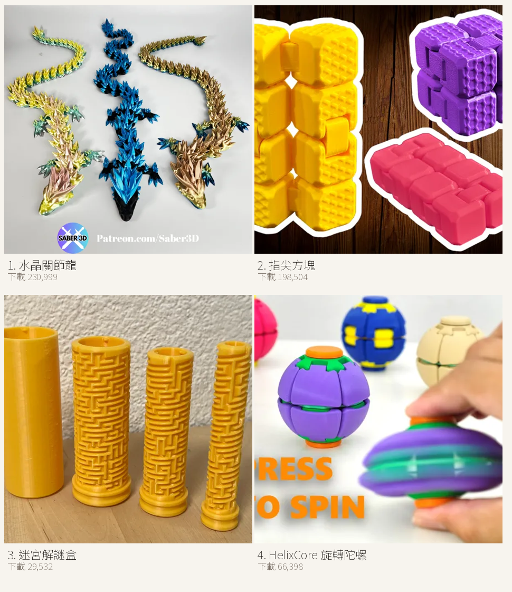
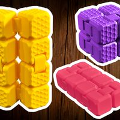
指尖方塊198,504 次下載Fidget Cube Toy: Angled注意鉸鏈黏死就整顆報廢
微調0.16mm 層高、XY −0.05mm、不開支撐 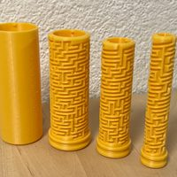
迷宮解謎盒29,532 次下載Russian Maze Puzzle Gift Box - HARD注意軌道公差太大會鬆、太小會卡
微調0.2mm 層高、XY −0.03mm，先印單層測試片 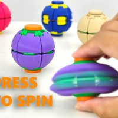
HelixCore 旋轉陀螺66,398 次下載HelixCore – Press-to-Spin Squishy Ball注意球面接縫明顯
微調0.12–0.16mm、外壁降速到 50mm/s
六、機械：會動的機構件
這類最能看出機器精度：齒輪咬合、軸承間隙、一體成形連桿。
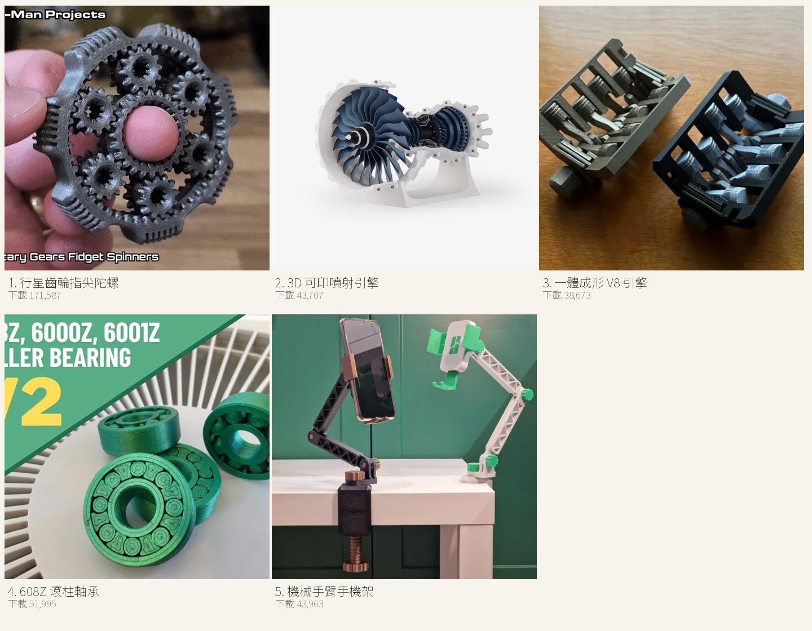
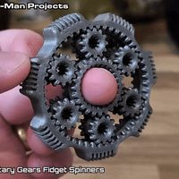
行星齒輪指尖陀螺171,587 次下載Planetary Gears Finger Fidget Spinners注意齒輪咬合太緊轉不動
微調0.16mm、XY −0.05mm、填充 30% 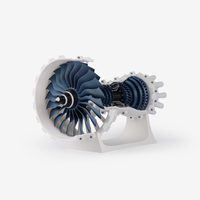
3D 可印噴射引擎43,707 次下載3D Printable Jet Engine注意大量懸空，支撐很難拆
微調支撐只觸熱床、0.2mm 層高、風扇全開 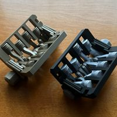
一體成形 V8 引擎38,673 次下載Print-in-place v8 engine fidget注意連桿間隙不對就卡死
微調0.16mm、XY −0.05mm、外壁 40mm/s 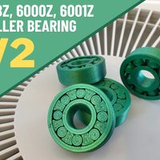
608Z 滾柱軸承51,995 次下載608Z, 6000Z, 6001Z Roller Bearing V2注意間隙極敏感，差 0.05mm 就轉不動
微調XY 從 −0.05mm 起調、0.12mm 層高、滾道不要上油 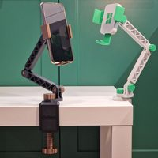
機械手臂手機架43,963 次下載Mechanical Phone Holder Desk Mounted Stand Arm注意關節鬆緊差很多
微調0.2mm、XY −0.03mm，關節件用 PETG
第二批機械件：重點在「齒輪咬合」與「彈片壽命」，同一參數印三顆就會知道 XY 補償該往哪邊調。
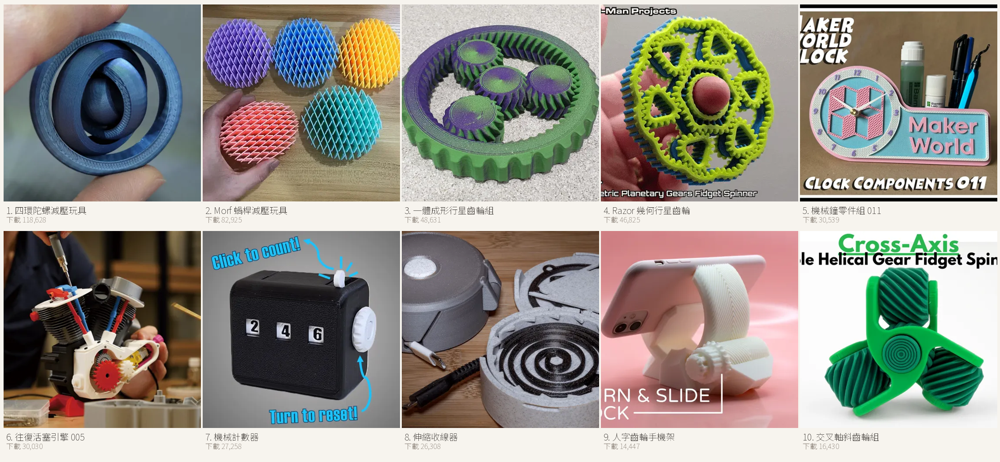
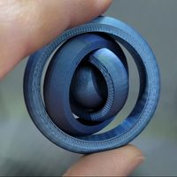
四環陀螺減壓玩具118,628 次下載4 Ring Gyro Fidget注意同心環間隙要求高，差 0.05mm 就卡
微調0.16mm、XY 補償 −0.05mm、外壁 40mm/s 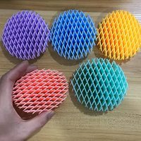
Morf 蝸桿減壓玩具82,925 次下載Fidget Morf Worm注意蝸桿與齒面容易黏死
微調0.16mm、XY −0.05mm，先印最小那顆試手感 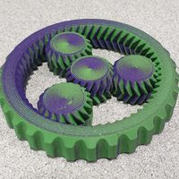
一體成形行星齒輪組48,631 次下載Print in Place Planetary Gear Spinner注意行星輪咬合過緊就整組報廢
微調0.16mm、XY −0.05mm、填充 30% 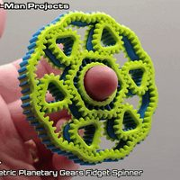
Razor 幾何行星齒輪46,825 次下載"Razor" Geometric Planetary Gears Fidget Spinner注意多層齒輪疊合，公差累積
微調XY −0.05mm，外壁降到 35mm/s 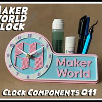
機械鐘零件組 01130,539 次下載Clock Components 011 - Maker World Clock注意小件極多，組裝順序不能錯
微調0.12mm、XY −0.05mm，先印單一齒輪組 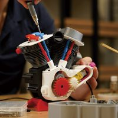
往復活塞引擎 00530,030 次下載Engine Model 005注意連桿與曲軸間隙太小會卡
微調0.16mm、XY −0.05mm，氣缸內壁 3 圈 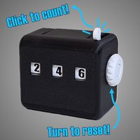
機械計數器27,258 次下載Mechanical Counter - all printed parts!注意棘爪彈片斷了就歸零
微調0.16mm，彈片處填充 100% 
伸縮收線器26,308 次下載Retractable Cable Organizer - With Stop注意發條彈簧張力過大會爆開
微調PETG 印發條、0.16mm，先繞 2 圈試張力 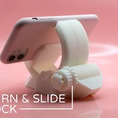
人字齒輪手機架14,447 次下載Herringbone Gear Phone Stand Pork3D by Pork3D.com注意齒輪咬合與手機重量要平衡
微調0.2mm、XY −0.03mm，填充 25% 交叉軸斜齒輪組16,430 次下載Cross-Axis Triple Helical Gear Fidget Spinner注意三個齒輪交叉咬合，公差要求高
微調0.16mm、XY −0.05mm，先單獨試轉
七、第二批 12 件：收納、玩具、機構
如果你已經印完前面幾類，這批可以往「家裡每個角落」擴散。
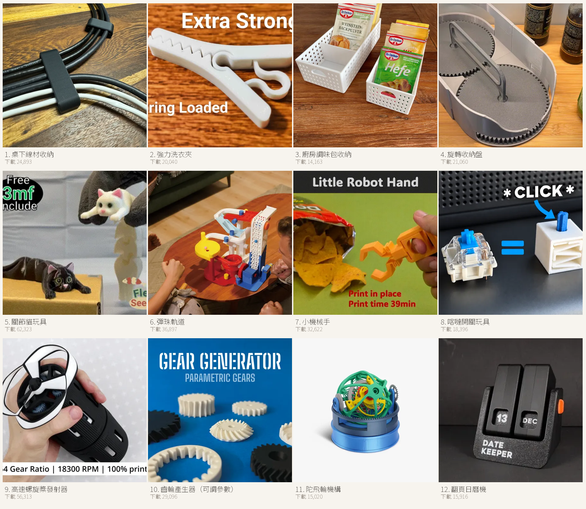
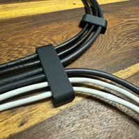
桌下線材收納24,893 次下載Clean Cable Management Organizer Clip注意桌板厚度不合就夾不住
微調先量桌板，螺絲孔放大 0.3mm 
強力洗衣夾20,040 次下載The Ultimate 3D Printed Clip注意彈簧溝反覆受力易裂
微調PETG、填充 40%、0.2mm 
廚房調味包收納14,163 次下載Kitchen Packet Organizer / Baking Spice Box注意抽屜深度不合放不進
微調依抽屜內寬縮放，免支撐 
旋轉收納盤21,060 次下載Spinning Organizer | Rotating Storage Box注意軸心太緊轉不動
微調軸徑 +0.2mm、XY −0.03mm 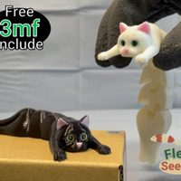
關節貓玩具62,323 次下載Flexi Holding Cat (Print-in-place)注意尾巴與耳朵細節易斷
微調0.16mm、外壁降到 40mm/s 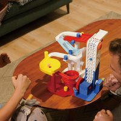
彈珠軌道36,897 次下載Marble Run 003注意接頭高低差會卡珠
微調0.2mm，每節印完先用手試珠再組 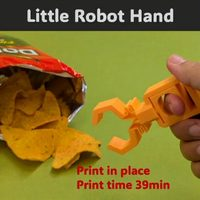
小機械手32,622 次下載Little Robot Hand注意指節黏死、掰不開
微調0.16mm、XY −0.05mm；先用 0.2mm 版本試手感 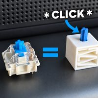
喀噠開關玩具18,396 次下載Clicky Clicker with *Click* Sound注意手感偏硬或沒聲音
微調0.16mm，彈片處填充 100% 高速螺旋槳發射器56,313 次下載High Speed Propeller Launcher注意高速旋轉件，組裝不良會射出
微調軸位 XY −0.05mm；不要加大馬達電壓 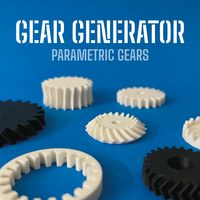
齒輪產生器（可調參數）29,096 次下載Gear Generator - Parametric Gears & Racks注意參數輸入錯誤會生成咬合不良的齒輪
微調模數 1–1.5、XY −0.05mm、外壁 4 圈 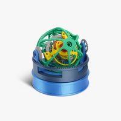
陀飛輪機構15,020 次下載TT Furious Tourbillon注意小件極多、組裝順序不能錯
微調0.12mm、XY −0.05mm；先只印一組齒輪試運轉 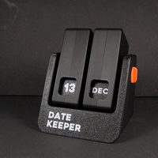
翻頁日曆機15,916 次下載"Date Keeper" Perpetual Flip Calendar注意彈簧與卡榫是弱點
微調0.16mm，彈片用 PETG
八、一體成形關節動物
全部都是 print-in-place：印完不用組裝，直接能擺動。這類同時考驗尺寸補償與冷卻。
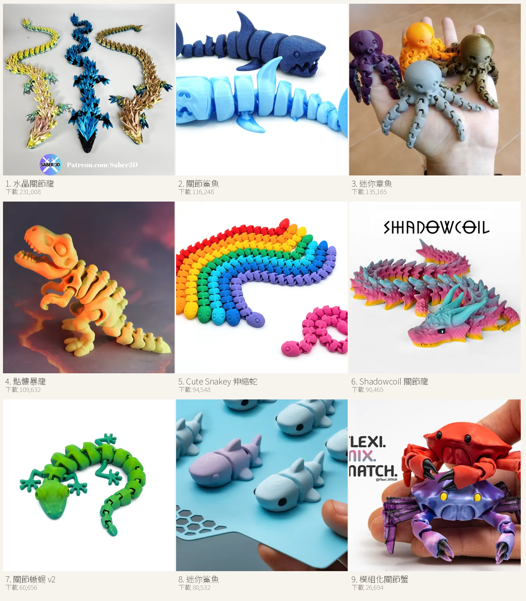
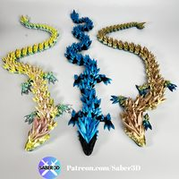
水晶關節龍231,008 次下載Articulated Crystal Dragon by Saber3D注意背刺與角很脆
微調0.16mm、外壁 40mm/s、XY −0.05mm 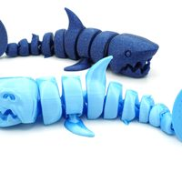
關節鯊魚116,248 次下載Articulated Shark注意尾鰭大片懸空
微調免支撐、懸空處局部降速到 30mm/s 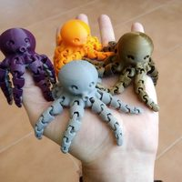
迷你章魚135,165 次下載Cute Mini Octopus注意觸手細、容易拉絲
微調0.12–0.16mm、線材先烘乾、回抽 +1mm 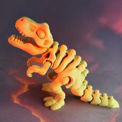
骷髏暴龍109,632 次下載Flexi Skeleton T-Rex Dinosaur注意肋骨薄，拆支撐會斷
微調0.16mm、外壁 3 圈、支撐只在熱床 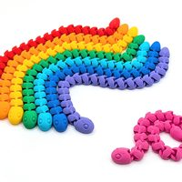
Cute Snakey 伸縮蛇94,548 次下載Cute Snakey - Free to Sell - No AMS注意長條連續路徑容易拉絲
微調線材乾燥、回抽 +1mm、外壁 40mm/s 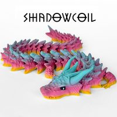
Shadowcoil 關節龍90,465 次下載Shadowcoil - Articulated Dragon注意龍角與背鰭細節小
微調0.12mm、外壁 35mm/s 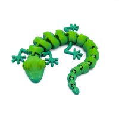
關節蜥蜴 v260,656 次下載Articulated Lizard v2注意腳趾極小易斷
微調0.12–0.16mm、XY −0.03mm 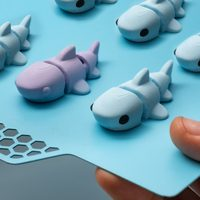
迷你鯊魚80,532 次下載Mini Shark Articulated注意一次排多隻會互相黏住
微調排列間距至少 5mm、關閉「合併同層」 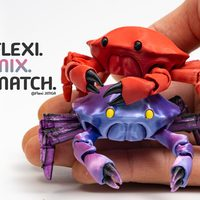
模組化關節蟹26,694 次下載Modular Flexi Crab No AMS Required注意多色換料浪費大
微調沒有 AMS 就分件印，XY −0.05mm
第二批：換不同物種，包含體型更小的入門款（5g 蜥蜴只要 15 分鐘）。
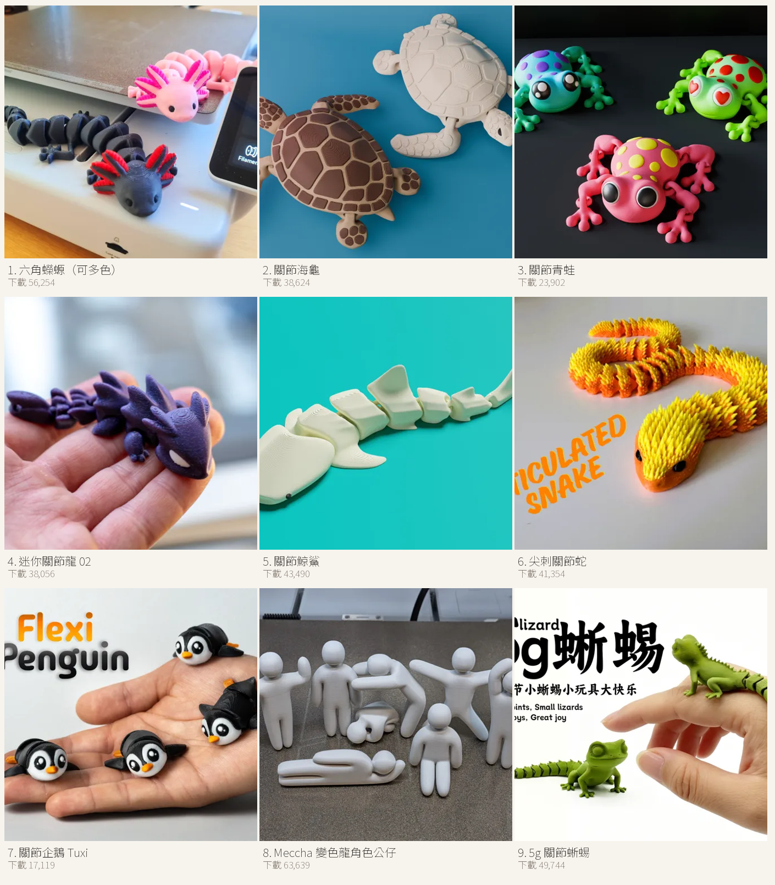
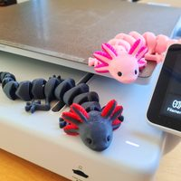
六角蠑螈（可多色）56,254 次下載Articulated Axolotl (Multicolor)注意外鰓是最容易斷的地方
微調外壁 30mm/s、0.12mm、XY −0.05mm 關節海龜38,624 次下載Articulated Sea Turtle (singlecolor & multicolor)注意龜殼頂面紋理容易醜
微調0.16mm，開 Ironing（頂面熨燙） 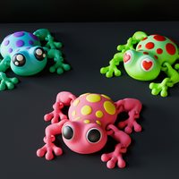
關節青蛙23,902 次下載Cute articulated frog注意貼床面積小，容易中途倒
微調Brim 5mm、第一層 0.25mm、底板 60°C 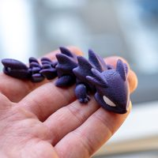
迷你關節龍 0238,056 次下載Mini Articulated Dragon 02注意尺寸極小、間隙吃掉整件功能
微調0.08–0.12mm、XY −0.03mm 關節鯨鯊43,490 次下載Articulated Whale Shark注意長身兩端易翹
微調Brim、底板降 5°C、前 10 層降速 尖刺關節蛇41,354 次下載Spiked Articulated Snake注意尖刺在冷卻不足時會斷
微調0.16mm、風扇 100%、別放冷氣口 關節企鵝 Tuxi17,119 次下載Tuxi the penguin – Articulated & keychain注意鑰匙圈孔常印成橢圓
微調孔徑 +0.3mm、孔位處降速 Meccha 變色龍角色公仔63,639 次下載Meccha Chameleon Characters - All OG Poses (No AI)注意姿勢件多、拆件費時
微調一次印 3–4 隻、間距 4mm、0.16mm 5g 關節蜥蜴49,744 次下載5g蜥蜴 lizard-关节可动蜥蜴-仅5g注意極輕，第一層沒貼牢就整個被噴嘴帶走
微調Brim 3mm、XY −0.03mm、首層 0.25mm
九、辦公室桌上小物
桌面整理這一類的重點是「尺寸要先量」：抽屜寬、便條紙寬、螢幕厚度、筆電厚度，量好再印才不會白印。
恐龍筆筒63,251 次下載Dinosaur T-REX Pencil Holder注意造型件，細節多但不承重
微調0.2mm 層高、免支撐，填充 15% 可調分隔文具盒70,684 次下載Organizer Box - Parametric Storage Bin注意尺寸可自訂，容易印完才發現不合抽屜
微調先量抽屜內寬再生成；0.2mm、免支撐，可無限拼接 筆電散熱支架51,742 次下載笔记本电脑支架 Laptop Stand注意PLA 長期承重會慢慢彎
微調PETG 印、填充 30%、外壁 3 圈 桌面模組層架35,936 次下載Modular Desk Shelf Fully Printed • Screwable Addon注意承重不足會下垂
微調填充 25%、外壁 4 圈、底面加防滑墊 騎士造型筆筒34,808 次下載Knight of the Quill Portapenne Cavaliere Medievale注意細部懸空多，支撐難拆
微調支撐只觸熱床、0.16mm、外壁 35mm/s 便條紙座（附模板）24,821 次下載Sticky Note Holder with Stencils注意便條紙尺寸各牌不同
微調先量便條紙寬度再縮放，內側預留 1mm 螢幕下筆架＋便條座15,672 次下載Under Monitor Pen / Sticky Note Holder注意貼合面尺寸固定，螢幕厚度不同會鬆
微調背面貼 1mm 雙面膠、免支撐 名片座19,556 次下載Business Card Holder 注意頂面紋路容易醜
微調0.16mm + Ironing（頂面熨燙） SD 卡收納盒16,949 次下載SD card storage box注意卡槽公差差 0.1mm 就太鬆或太緊
微調XY 補償 −0.05mm，先印一格試鬆緊 立式筆電架35,070 次下載Vertical laptop stand注意夾口會刮傷機身
微調夾口貼 1mm 泡棉、填充 30%
第二批辦公室：這批的共同點是「尺寸取決於你桌上的東西」，量好再印。
平板立架46,976 次下載iPad / Tablet Stand Riser注意角度固定，平板太厚會卡
微調先量平板厚度，夾口 +0.5mm 耳機座69,384 次下載Headphone holder modern Design注意頭帶寬度不一
微調0.2mm、填充 20%，底座加重避免傾倒 Japandi 桌上托盤47,388 次下載Japandi Tray 注意底面大、容易翹
微調Brim 5mm、底板 60°C、0.2mm Apple Watch 充電座61,172 次下載Apple Watch Charging Stand注意充電盤孔徑要準
微調孔徑 +0.3mm、0.16mm，先用舊充電盤試 通用線材固定夾27,350 次下載universal cable holder V1注意夾口與線徑不合就滑動
微調依線徑縮放、PETG 較耐用 Pot Boy 小盆栽19,135 次下載Pot Boy Planter注意底部無排水孔會爛根
微調自行加 3mm 排水孔、PETG 或 PLA 內襯 簡約雙色耳機掛勾36,641 次下載Simple Headphone Hook dual color注意雙色需要換料
微調無 AMS 可分件印、0.2mm 長方形鑰匙托盤24,817 次下載Modern Rectangular Key Tray注意淺盤容易翹邊
微調Brim 3mm、底板 60°C、0.2mm 設計師文件盤6,580 次下載Designer Paper Tray (Stackable, A4 & 8.5"x11")注意堆疊公差與承重
微調0.2mm、填充 25%、外壁 3 圈
十、可愛動物鑰匙圈
這類都是「小尺寸＋活動關節」，成敗幾乎全在間隙與第一層：尺寸縮到 6 公分以下時，0.4 mm 噴頭的補償沒調好就會整隻黏死。建議一律 0.16 mm 層高、外壁 3 圈、XY 補償 −0.03～−0.05 mm。鑰匙圈另備 25 mm 開口環即可。
關節水獺30,364 次下載Articulated Otter - Toy / Keychain注意腹部有支撐接觸面，拆完會留白痕
微調支撐只在熱床、Z 距離 0.2 mm、0.16mm 關節小狗21,279 次下載Flexi Dog - Articulated Keychain注意四條腿貼床面積小，容易中途被帶來
微調Brim 3mm、首層 0.25mm、0.16mm 蓬尾關節狐狸13,858 次下載Fluffy Tail Cute Flexi Fox - Toy / Keychain注意蓬鬆尾巴由細小三角組成，最會拉絲
微調線材先烘乾、回抽 +1mm、0.12–0.16mm 關節小貓5,707 次下載Cute Cat Keychain Toy – Articulated Flexi Kitty注意尾巴節數多，間隙不足會整條僵硬
微調XY −0.05mm、外壁 3 圈、別開「合併同層」 關節兔子5,205 次下載Flexi Bunny Rabbit - Articulated Keychain注意長耳朵細、拆件時最容易斷
微調免支撐、0.16mm、耳朵處外壁降速 30mm/s 可愛小牛鑰匙圈4,222 次下載Cute Cow Keychain注意成品僅 52mm，鑰匙圈孔常印成橢圓
微調0.12mm、孔徑 +0.3mm、XY −0.03mm
這六隻的共同點：都是「印完不用組裝」，直接掛上鑰匙圈就能玩。想一次印一整串送人，間距留 4～5 mm、關閉「合併同層」避免黏在一起。
第二批：季節款與更多物種（北極熊、六角蠑螈、熊貓、水豚、紅熊貓、樹懶）。這批的下載數差距很大，最上面那隻蠑螈已經五萬多次，代表「好印、不挑線」。
六角蠑螈（免支撐）54,535 次下載Flexi Axolotl & Keychain - No Supports注意外鰓是最細的地方，拆件常斷
微調0.12–0.16mm、外壁 30mm/s、XY −0.05mm 關節熊貓15,008 次下載Panda - Articulated Figure Keychain注意黑白分色用 AMS 換料很浪費
微調單色印完再上色、0.16mm、外壁 3 圈 關節水豚9,030 次下載Articulated Capybara - Strong Joints注意作者把關節做鬆，XY 補太多會晃
微調XY 0、0.16mm、Brim 3mm 蓬尾紅熊貓3,595 次下載Fluffy Tail Cute Flexi Red Panda - Toy / Keychain注意蓬尾由大量細片組成，最會拉絲
微調線材先烘乾、回抽 +1mm、0.12–0.16mm 北極熊（聖誕帽）2,061 次下載Polar Bear with Santa Hat - Articulated & Keychain注意帽尖與耳朵很細，冷卻不足會斷
微調0.16mm、帽尖處降速 30mm/s、風扇 100% 關節樹懶1,976 次下載Articulated Sloth & Keychain注意掛鉤孔偏小，開口環不好穿
微調孔徑 +0.3mm、孔位處降速、0.16mm
第三批：鑰匙圈＋冰箱磁鐵兩用款（聖誕河馬、章魚、貓、壁虎、迷你河馬、Taro 貓）。這批多數有「磁鐵孔」版本，需要 6×2 mm 圓形釹鐵硼磁鐵，印完點一滴強力膠壓進去即可；同一隻也能只印鑰匙圈版。
彈性章魚109,505 次下載Flexi Funny Octopus注意八條觸手節點多，間隙不足會整坨黏住
微調0.16mm、XY −0.05mm、外壁 3 圈、回抽 +1mm 彈性貓（鑰匙圈）23,898 次下載Flexi Cat - Articulated Keychain注意尾巴節數多，冷卻不足會變僵硬
微調0.16mm、風扇 100%、XY −0.05mm 彈性壁虎22,740 次下載Flexi Gecko注意腳趾極細、貼床面積小，容易整隻被帶走
微調Brim 3mm、腳趾處降速 25mm/s、0.16mm 迷你河馬6,069 次下載Mini Hippos - Articulated & Keychain注意比手掌更小，孔徑會縮成橢圓
微調0.12mm、孔徑 +0.3mm、XY −0.03mm Taro 貓（鑰匙圈＋磁鐵）5,096 次下載Flexi Cat Keychain & Fridge Magnet - Taro注意磁鐵孔公差偏緊，硬壓會裂
微調孔徑 +0.2mm、0.16mm、印完點膠再壓 聖誕河馬（玩具／鑰匙圈／磁鐵）1,157 次下載Adorable Articulated Christmas Hippo (Toy, Keychain & Magnet)注意免支撐直接印，但磁鐵孔與帽尖都很細
微調0.16mm、孔徑 +0.2mm、帽尖降速 30mm/s 關節馴鹿1,408 次下載Articulated Reindeer - Strong Joints注意鹿角分叉細，拆件時常從角尖斷
微調免支撐、0.16mm、鹿角處降速 30mm/s、外壁 3 圈 呆萌變色龍（眼睛會動）5,311 次下載Goofy Flexi series – CHAMELEON flexi, Movable Eyes注意眼球是獨立小零件，印完才裝，容易掉
微調0.12～0.16mm、眼球件別開「合併同層」、印完點一滴膠固定
磁鐵版本小提醒：6×2 mm 釹鐵硼吸力強，壓進去前先確認極性（整排同向才不會相斥）；給小孩用建議點膠封死，避免掉落誤食。
十一、A1 的列印參數（這幾類都適用）
| 項目 | 建議 |
|---|
| 噴嘴／層高 | 0.4mm／0.2mm（關節類用 0.16mm 更滑順） |
| 填充 | 15%（機構件 25%，齒輪類 40%） |
| 支撐 | 只有懸空超過 45° 才開；關節動物一律不開 |
| 列印板 | 原廠 PEI 紋理板，不用膠水 |
| 孔徑補償 | 要穿軸的孔，孔徑放大 0.2–0.3mm |
| 環境 | 不要放冷氣出風口或窗邊，A1 無封箱，風一吹就翹邊 |
十二、最常見的三種失敗，與對應修法
| 症狀 | 原因 | 修法 |
|---|
| 第一層有空隙、邊緣翹起 | 床面有油、Z 偏移太低 | 酒精擦板、重跑自動床平 |
| 關節黏死、掰不開 | 間隙不足或流量過高 | 層高降到 0.16mm、流量 −2% |
| 側面拉絲嚴重 | 線材受潮、溫度過高 | 換乾燥線材、降 5–10°C |
十三、資料來源與授權
所有模型都來自 MakerWorld，下載數以 MakerWorld 公開 API 於 2026-11-08 取得。各模型授權不同（多為 CC BY-NC 或 MakerWorld 專屬授權），下載前請在該頁確認授權條款；本文只整理連結，不轉載模型檔案。